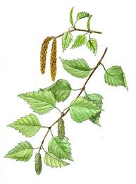
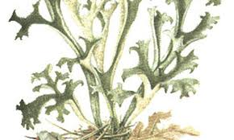
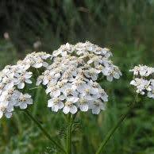
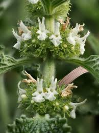

Birch
White birch essence components have anti-inflammatory properties, promoting lung cell growth and r epairing cough-induced bronchial and pulmonary damage.Some people take birch along with lots of fluids for “irrigation therapy” to flush out the urinary tract. Other uses include treating arthritis, achy joints (rheumatism), loss of hair, and skin rashes. Birch is also used in “Spring cures” for “purifying the blood.”Distillation of the bark yields Birch tar oil, an astringent ingredient of ointments for eczema and psoriasis. Native Americans boiled the bark to make poultices for minor wounds. An oil made by distilling the bark of the sweet birch was traditionally used for bladder infections, rheumatism, gout and nerve pain. Medicinally, birch has many uses; high in anti-inflammatory methyl salicylate, it's used as a powerful pain reliever. Both the leaves and branches can be used to treat sprains, strained muscles and headaches, and steaming the leaves can help clear sinus congestion.
Iceland moss
Iceland moss is used for treating irritation of the mouth and throat, loss of appetite, common cold, dry cough, bronchitis, indigestion, fevers, lung disease, kidney and bladder complaints, and the tendency toward infection. Some people apply Iceland moss directly to poorly healing wounds. Iceland moss can be contaminated with lead, and this can be harmful to the mother and baby. Ulcers in the stomach or small intestine: Iceland moss can irritate the lining of the digestive tract. Don't take it if you have stomach or intestinal ulcers.
Our Icelandic moss is responsibly harvested between May to October. Once the moss is harvested it is firstly cleansed of any impurities before being sun-dried or air-dried for later use. Icelandic moss in hair and skin care is known to be soothing, moisturising and anti inflammatory.
Yarrow
Popular in European folk medicine, yarrow contains flavonoids, plant-based chemicals that increase saliva and stomach acid to help improve digestion. Yarrow may also relax smooth muscle in the intestine and uterus, which can relieve stomach and menstrual cramps. Medicinal value: Yarrow is considered a medicinal wonder. It has been used to stop bleeding of wounds and cuts; as a poultice for burns and open sores; used to cure fevers and colds; and alleviates toothaches. Yarrow's antimicrobial and anti-inflammatory actions make it valuable for resolving infections, clearing sinus congestion, and bringing comfort to painful symptoms. Yarrow's flowers can be used in tea or tincture form as a decongestant for seasonal or environmental allergies, and as a classic cold and flu remedy, it's also believed to support lung and respiratory health. Yarrow has drying, astringent properties, which can be a natural support to those with sinus infections, wet coughs, and even sinus allergies. It helps to dry up and move excess mucous out of the respiratory system while reducing swelling in the tender membranes of the nose and throat.
Harvesting, Preserving, and Storing Yarrow. Wait until the dew has dried, but before the plants' essential oils have dissipated in the heat of the day. Harvest yarrow on a warm, sunny day when the plants are in full bloom. Cut the stem just above a leaf node. You can use both the flowers and the leaves.
Horehound
The chemicals in white horehound can thin mucus secretions, reduce spasms in the stomach and intestines, and decrease swelling (inflammation). One of the health benefits of horehound is that it works to relax muscles around your lungs and help support more relaxed and efficient breathing. This is important for obvious reasons - but very helpful for those suffering from breathing conditions or those with bronchitis or whooping cough. A cup of horehound tea may help to decrease the pain of a sore throat caused by cough and may boost digestion. The tea can be consumed using dried leaves or fresh leaves from plants in your garden. Just steep the leaves in boiling water for 5 to 10 minutes and add sweetener if desired.
Horehound sprouts in 14-21 days. Once your plant flowers, use shears to cut the foliage away from the base of the plant. Leave enough room for regrowth to occur. The leaves and flowers both can be harvested, but it's important to harvest while they're young.